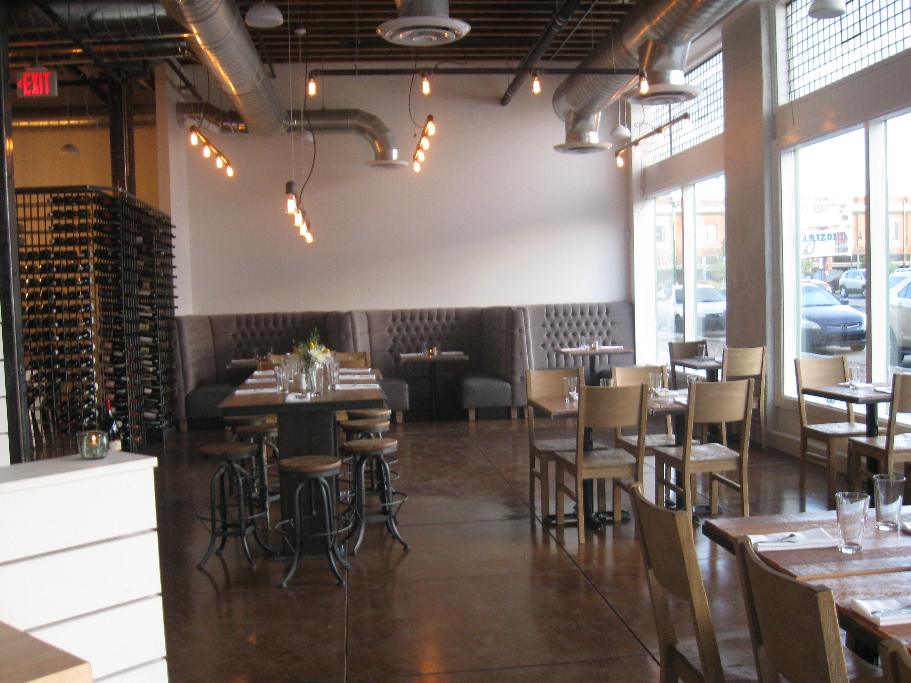

Get your food on! |
|
|
Map legend: Proper's suppliers Proper |
Proper is loco... |
|
...for local. Proper is one of many Tucson establishments that receives food from the Arizona 'foodshed'. Where Proper food comes from:
The map on the right shows the locations of Proper's suppliers. Click on icons for basic info. |